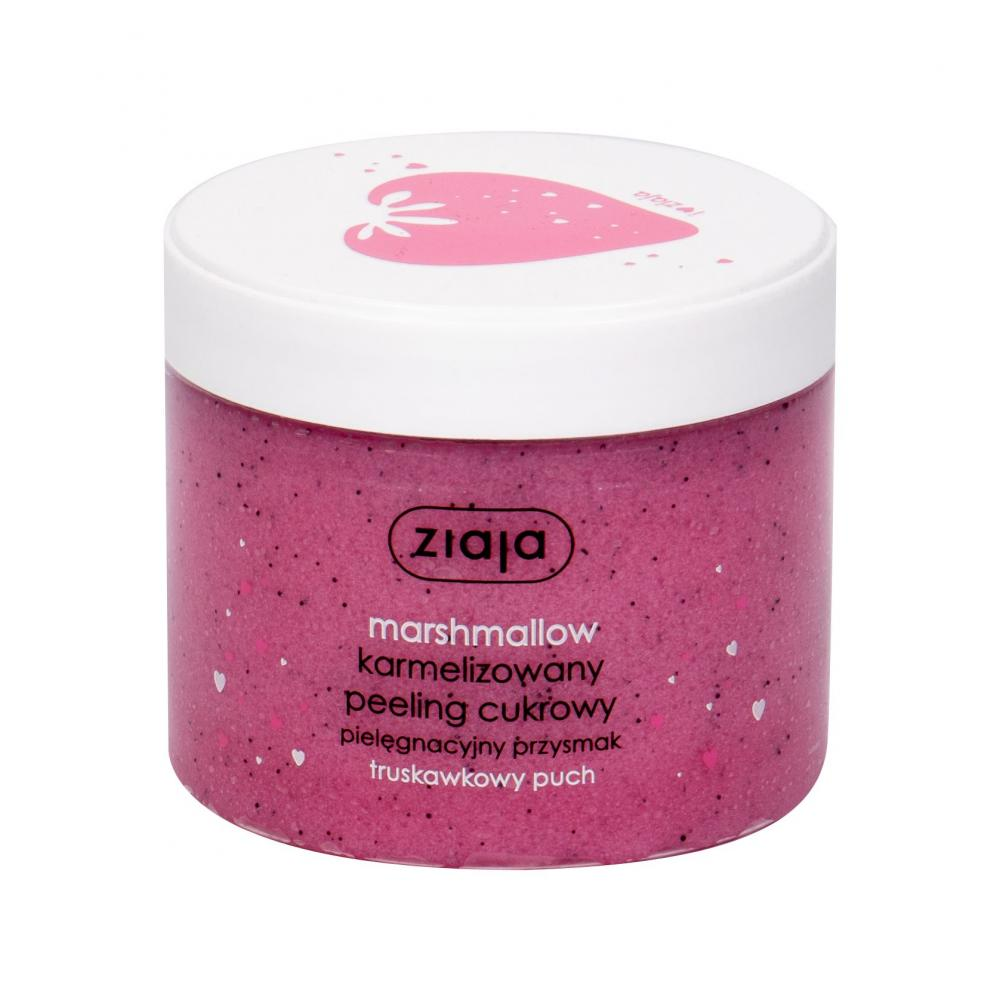
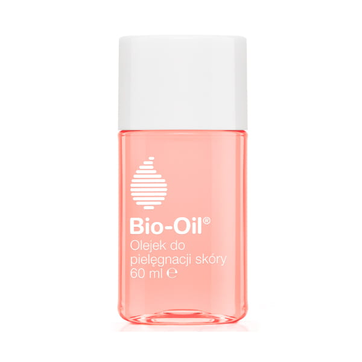
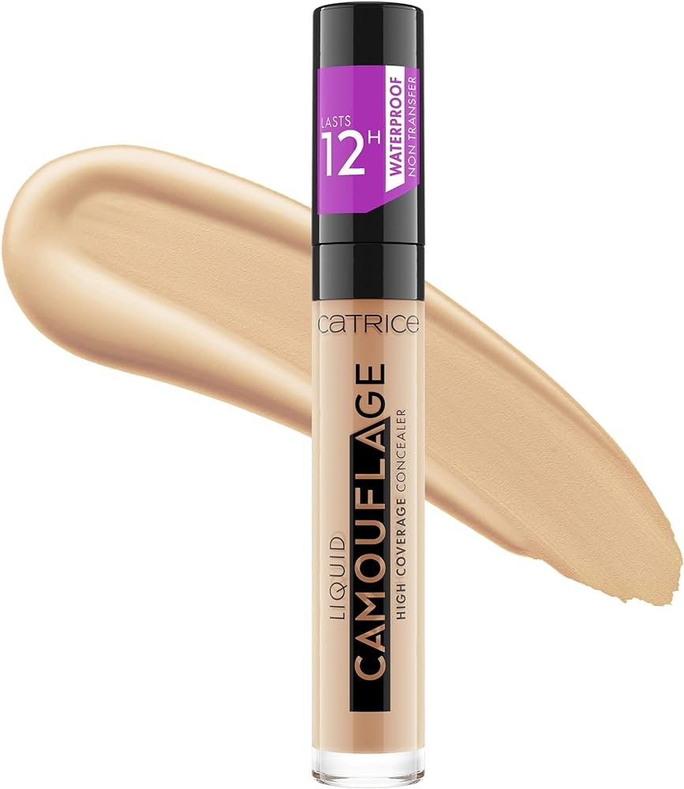

Staraj się używać na codzień ochrony przeciwsłonecznej, zwłaszcza latem, ze względu na negatywny wpływ promieni słonecznych na skórę.
Najlepiej sprawdzą się kremy SPF 50+. Koniecznie pamiętaj o reaplikacji kremu w ciągu dnia!
Stosuj serum na końcówki włosów
Stosowanie serum na końcówki włosów to doskonała metoda pozwalająca zminimalizować występowanie rozdwojonych końców włosów.
Z pewnością zaoszczędzisz na usługach fryzjerskich i będzięsz cieszyć się pięknymi włosami!
Nie zapomnij o codziennym nawilżaniu twarzy
Skóra na twarzy szczególnie potrzebuje nawilżenia. Pożegnaj uczucie suchości i ściągnięcia stosując przynajniej raz dziennie
nawilżąjący krem do twarzy!
Gładka skóra po peelingu

Peeling do ciała nie tylko zapewni ci aksamitnie gładką skórę, usuwając martwą warstwę naskórka, lecz również sprawi,
że balsamy do ciała będą lepiej nawilżać twoją skórę. Postaraj się go stosować przynajmniej raz na tydzień dla widocznych efektów!
Olejek do zadań specjalnych

Stosując codziennie naturalny olejek do pięlęgancji wrażliwej skóry, zapomnisz o bliznach, rozstępach i przebarwieniach.
Twoja skóra będzie bardziej elastyczna i nawilżona. Odczuj różnicę już dziś!
Pamiętaj o demakijażu

Niezależnie od tego jak pięknie i starannie wykonany byłby Twój makijaż, nie zapominaj o jego dokładnym zmywaniu przed snem. To ważny etap pielęgnacji.
Podczas snu w skórze zachodzą procesy regeneracyjnie, więc zadbaj o szczególnie oczyszczenie twarzy przed snem!